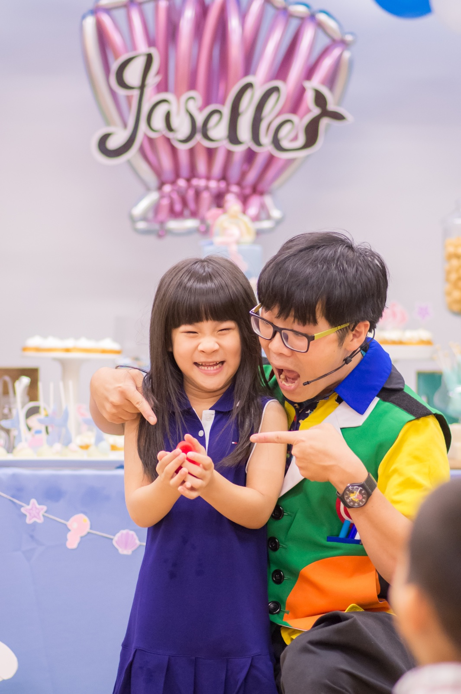
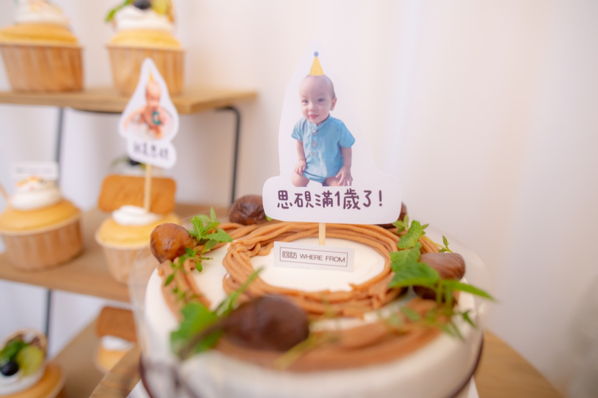

抓周派對可以怎麼做？
- 抓周儀式＋全家合照＋生活感互動
- 小型親友聚會（建議 10–20 人）
- 可加購活動拍攝，留下完整紀錄
方案與費用
| 方案 | 費用 | 說明 |
|---|---|---|
| 純場地使用 | 4 小時 NT$6,800 | 不含攝影服務；適合自行安排流程與佈置。 |
| 加購｜活動拍照 | NT$4,800 | 抓周紀錄、全家福、活動互動畫面。 |
| 加購｜照片＋短片 | NT$8,800 | 照片＋微電影短片（依流程）。 |
照片參考



小提醒
本場地為自主包場使用；可自備餐點、蛋糕或外送。若需雨備/加時，請預約時提出。